Projects and Research
Here are some of the projects and research I’ve done in reverse chronological order.
Species Distribution Modeling of W. fluitans
In my last semester at St. Mary’s College of Maryland I took a Conservation Biology course. Our final project was to map the current distribution, habitat suitability, and predicted future range of a species of our choice. I chose the aquatic moss species Warnstorfia fluitans and to focus on their native habitats of the E.U., Australia, and New Zealand. 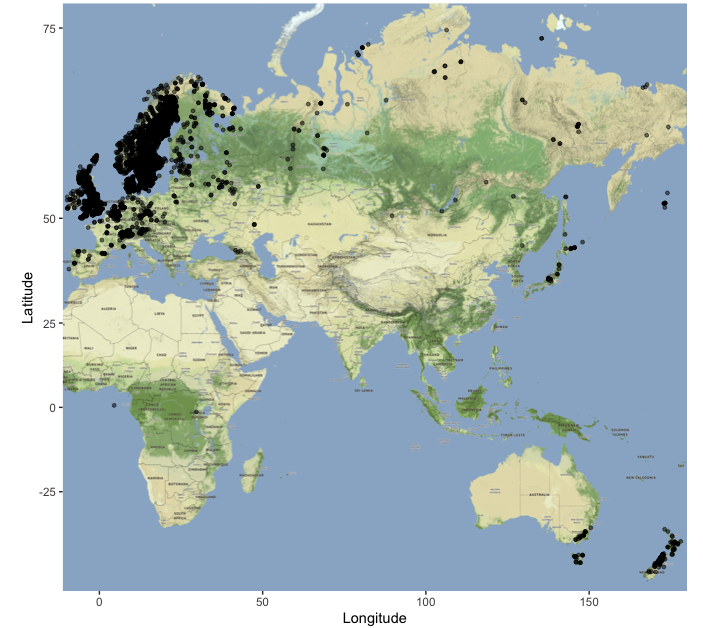 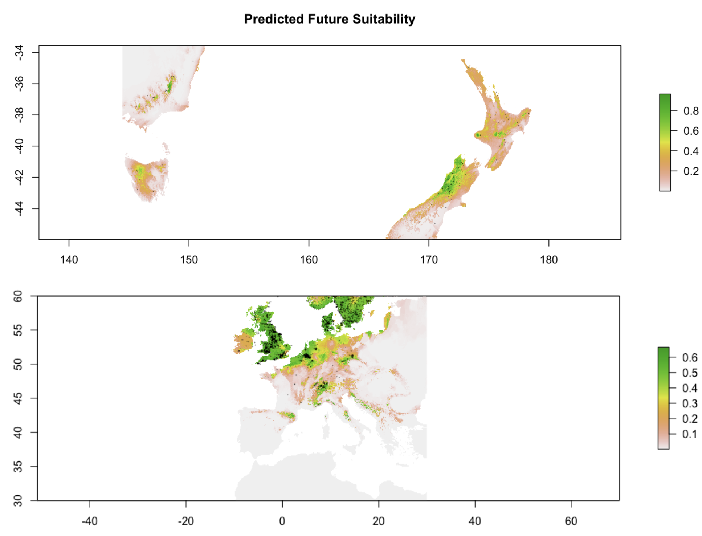Seawater intrusion and Phytophthora abundance in Southern Maryland coastal soils
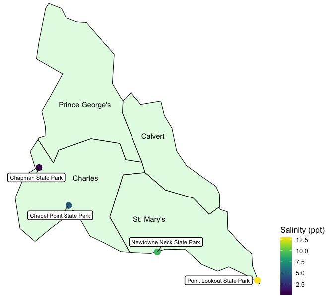
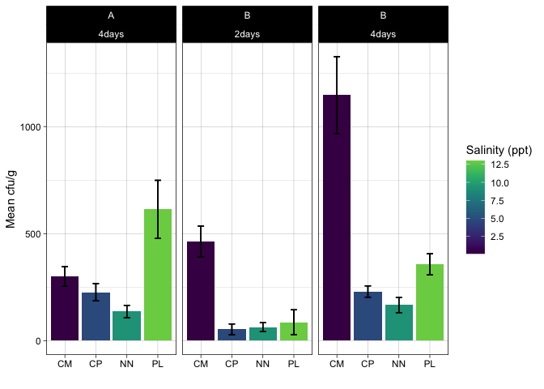
Coastal Ecology Summer Research- SAV, Lyngbya, and oysters
 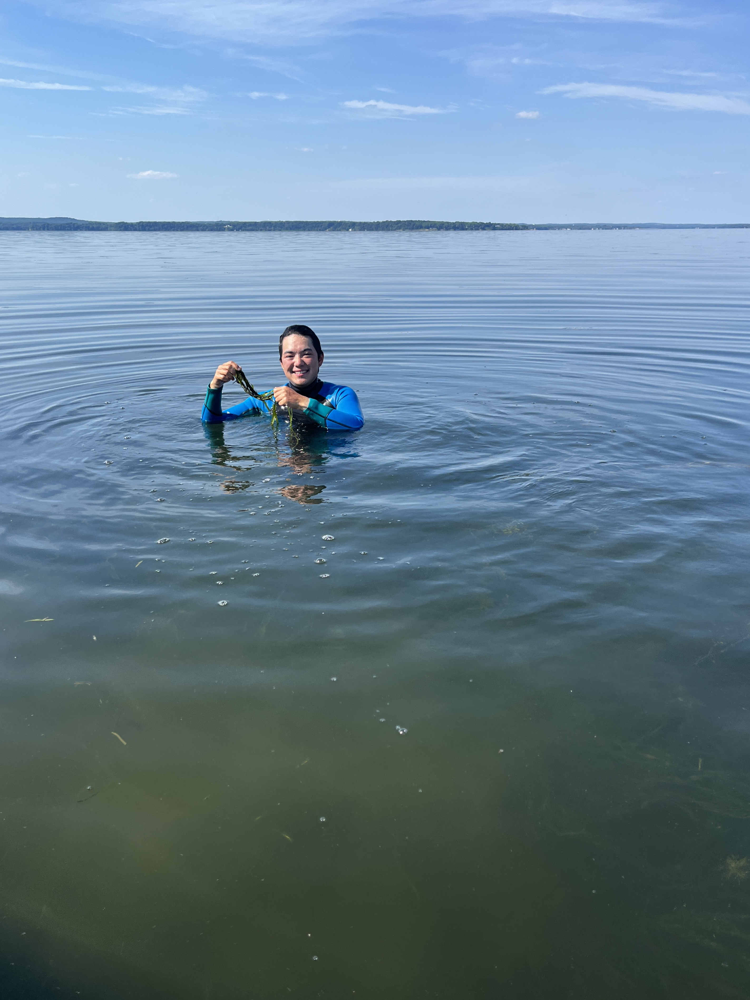
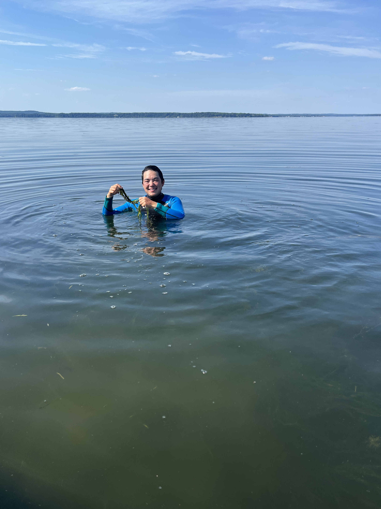
Using low-cost pressure gauges to measure wave attenuation in a restored oyster reef in Southern Maryland
Waves formed by wind and wake are increasingly contributing to coastal erosion. Climate change is also increasing the severity and frequency of storm events that damage coastlines. These coastlines are an area of great importance ecologically and economically from ecosystem services, tourism, and infrastructure. To mitigate coastal erosion, there have been several different techniques developed with varying success. In the Chesapeake Bay, 3D oyster reef balls have been constructed for oyster restoration purposes. These submerged concrete structures though may also be attenuating waves. To find whether they are having an effect on waves and possibly mitigating coastal erosion, I constructed Do-It-Yourself (DIY) pressure gauges, since commercial pressure gauges are quite expensive. These gauges were placed between the shore and an array of 3D oyster reef balls located in the St. Mary’s River in front of St. Mary’s College of Maryland, taking pressure readings at 9 Hz for 5.5 days. Although wave height and energy were generally lower at stations located directly behind the oyster reefs, these differences were not statistically different. Additional research that encompasses a greater range of wind and wave conditions is needed to more rigorously test whether these 3D reef balls attenuate waves.
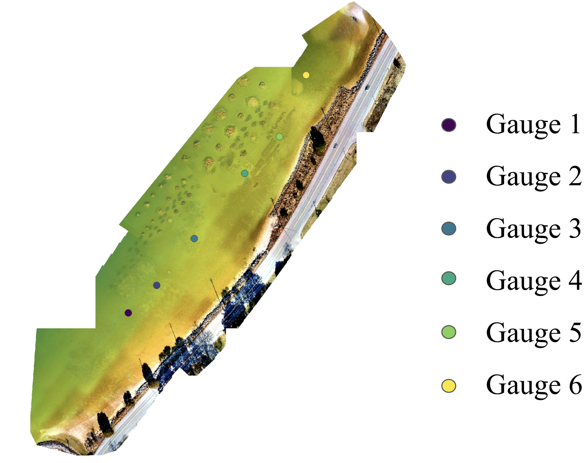 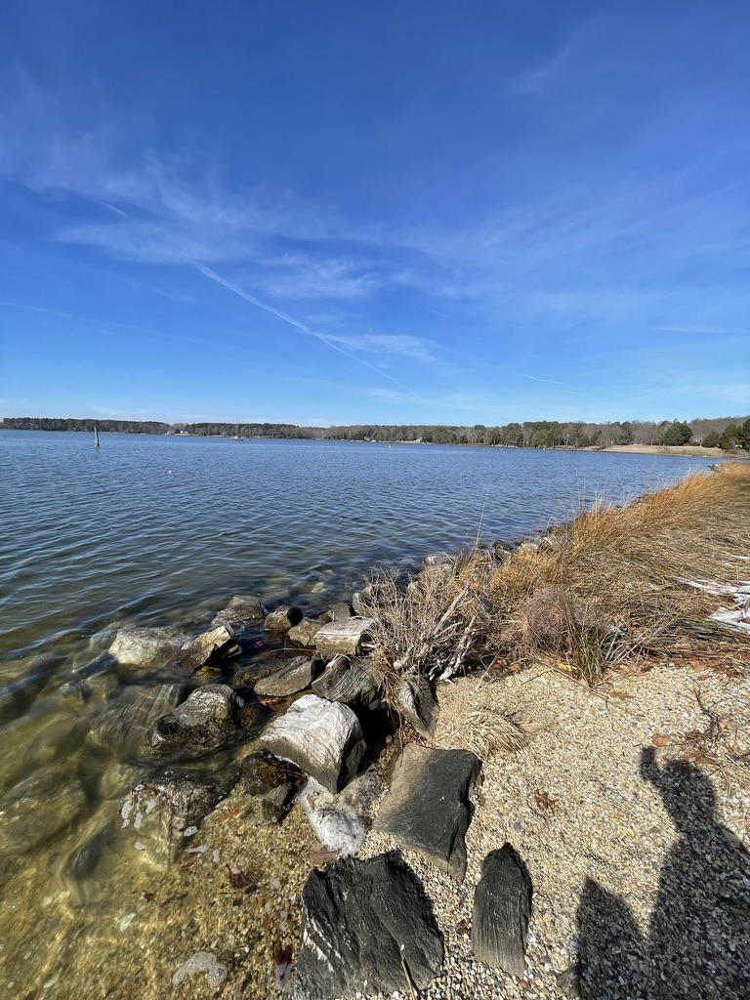 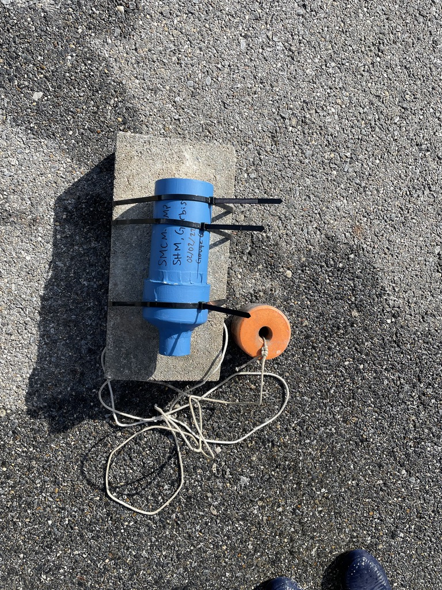
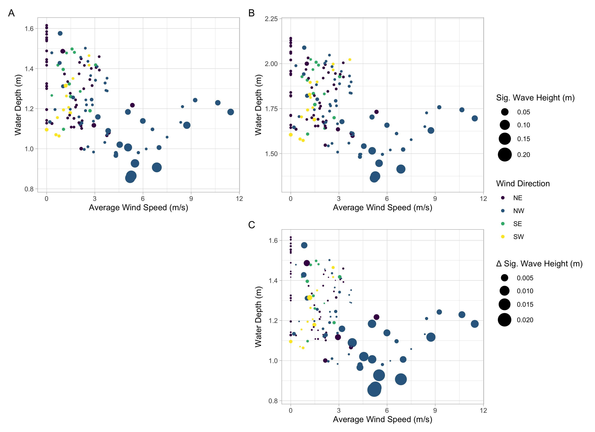
Significant wave height (indicated by symbol size) as a function of wind speed and water depth for wave gauge 1 (A) and gauge 4 (B). Wind direction (0–90 = NE, 90– 180 = SE; 180–270 = SW; 270– 360 = NW) is indicated by symbol color. (C) The difference in significant wave height for wave gauges 1 and 4. Symbol size indicates the magnitude of the wave height difference.
Apple bloom dates in the Mid-Atlantic region in a changing climate
Deciduous trees, including apple, have been blooming earlier, and it is suspected that this is due to increasing late winter and early spring temperatures. When trees bloom in April rather than early to mid-May, they are at increased risk for late spring frost killing the blooms. In this study, we aimed to investigate temperature patterns over the past 36 years in the Mid-Atlantic region and analyze the relationships between temperature averages, growing degree days, and full bloom dates for the Golden Delicious apple. Temperature data for Hudson Valley, NY, Rock Springs, PA, and Winchester, VA were gathered from the Global Historical Climatology Network. We calculated accumulated growing degree days (GDD) from February 1st, March 1st, March 15th, and April 1st until full bloom using 4 degrees Celsius as the minimum temperature that apple trees begin to grow. Linear regression was used to analyze relationships between growing degree days and full bloom. We also plotted the day of full bloom for each year and location. We found that there is a moderate relationship between growing degree days and the day of full bloom, but there is still a lot of variation that is not explained by the linear regressions. Hudson Valley and Rock Springs have similar slopes, but the slopes of the Winchester line depend more on the date of accumulated growing degree days. Winchester on average had earlier bloom dates, most likely due to its more southerly location. From these plots, we cannot accurately predict bloom dates. In the future, we plan to study other variables that may affect bloom dates, such as the number of days/hours above or below threshold temperatures, maximum and minimum temperatures or growing degree days from the previous year, and fruit yield from the previous year. Previous research on carbohydrate accumulation shows that this variable may also influence bloom date.
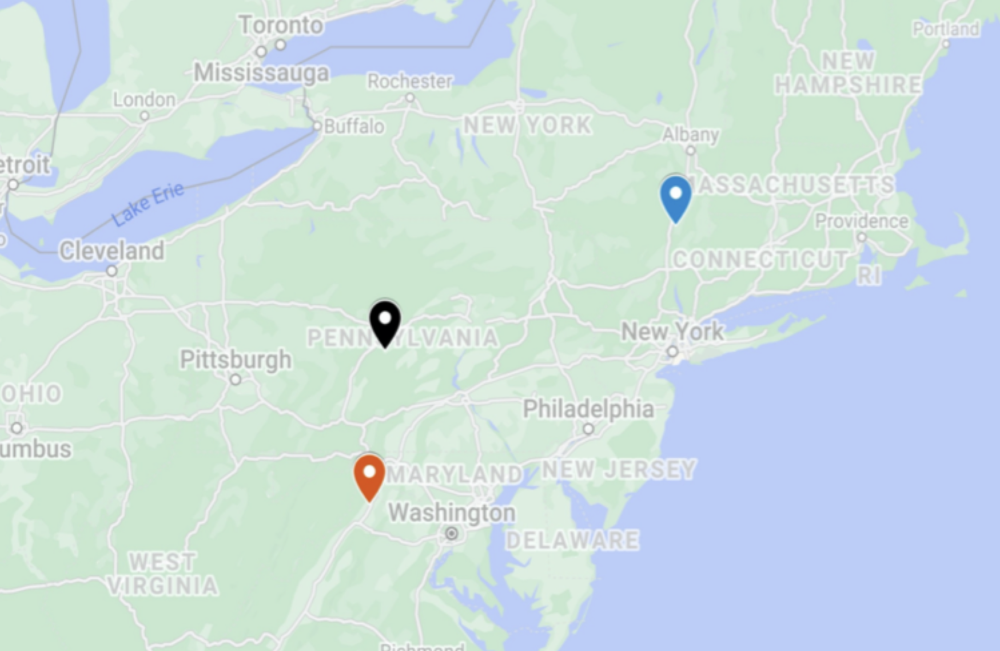
Locations of the temperature data and orchard study sites. Top right blue marks Hudson Valley NY; Center black marks Rock Springs, PA; Bottom orange marks Winchester, VA.
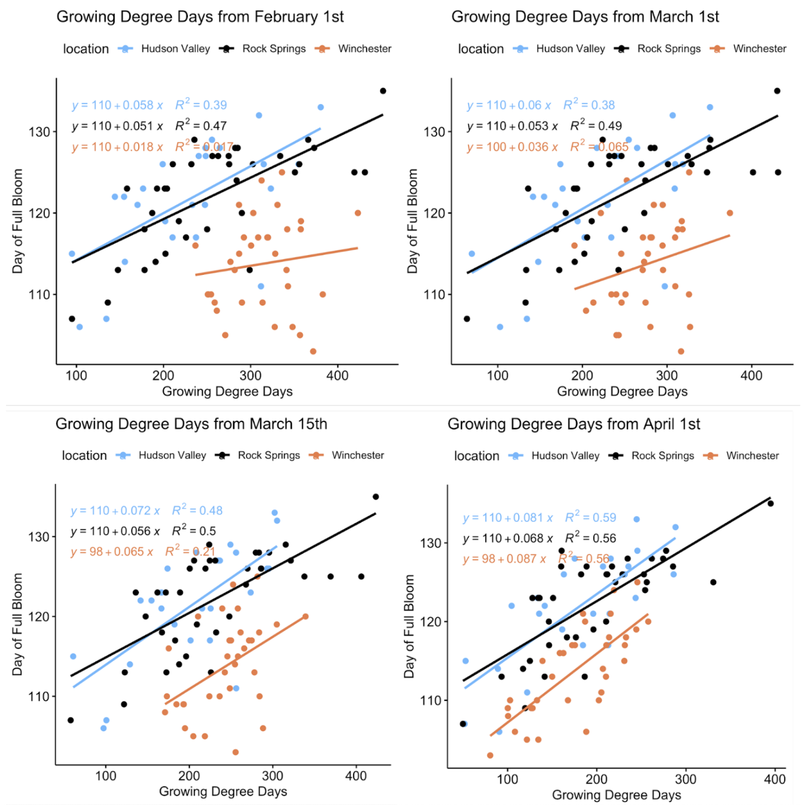